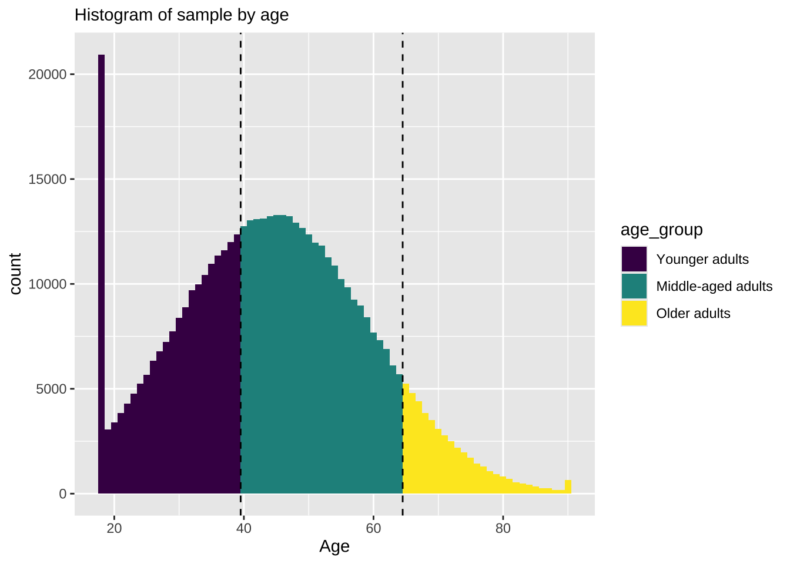
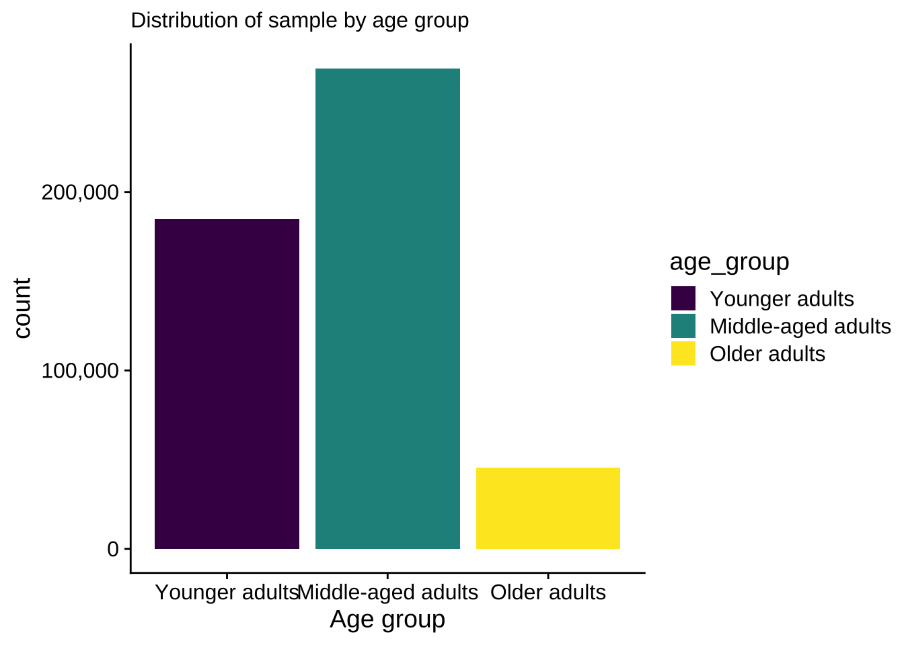
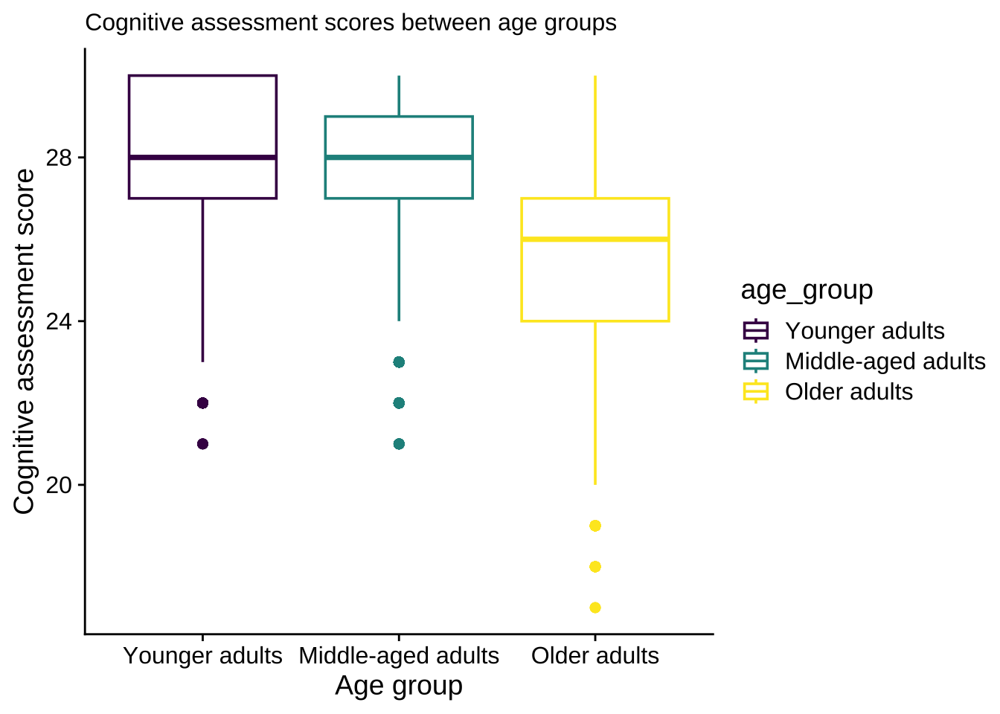
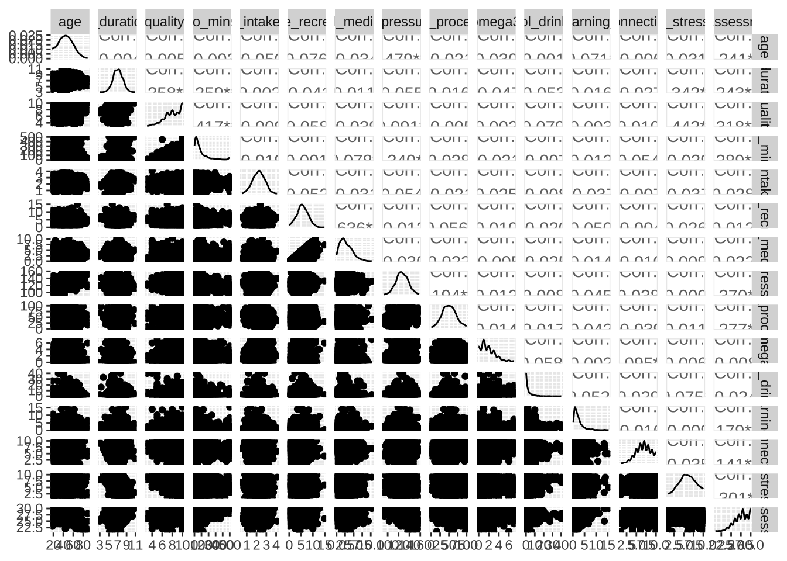
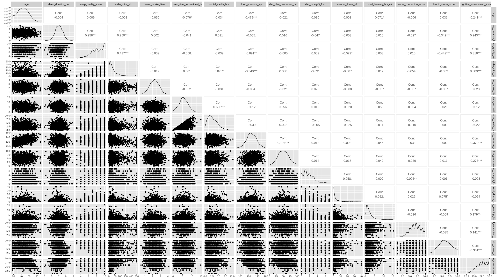
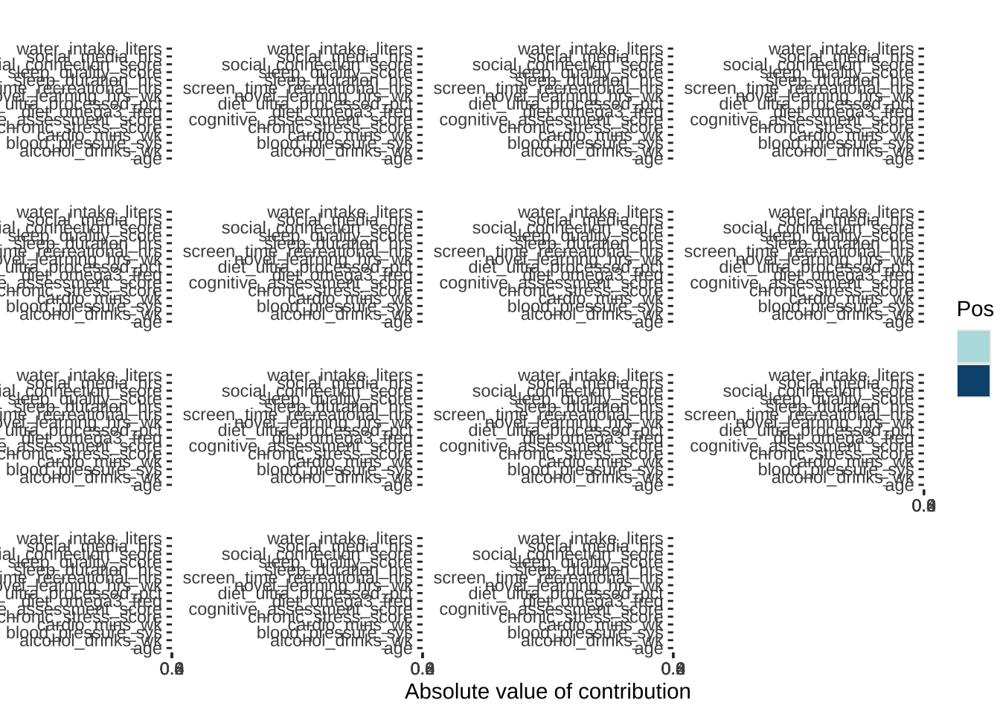

Predictive models to predict cognitive performance using random forest & linear regression
Introduction
Cognitive decline is a common feature of aging and is shaped by both modifiable and nonmodifiable factors, including physical fitness, psychological stress, and genetic predisposition. In some individuals, cognitive deterioration may occur at an accelerated rate and progress to mild cognitive impairment, thereby increasing the risk of Alzheimer’s disease and related dementias. Despite advances in the management of cognitive decline, the development of effective interventions to prevent or delay its progression remains challenging because of the complex interplay among the biological, behavioral, environmental, and genetic factors that influence cognitive aging.
Aim of the study
This project aims to characterize cognitive performance among adults aged 18 to 59 years by: (1) determining whether individuals with similar behavioral profiles exhibit similar cognitive performance and (2) identifying the behavioral factors that are the strongest predictors of cognitive performance.
Methods
This synthetic data set is obtained from Kaggle (see ref. below), with entries of 500,000 and 16 observations which includes lifestyle input, biological & demographic data with realistic distribution. Correlation analysis is used to determine the correlations between observations. Principal component analysis is employed to evaluate if the continuous variables could be summarized using fewer dimensions. Machine-learning models, including random forest and regression-based approaches, will then be developed to determine the relative importance of these behavioral factors and predict cognitive performance.
Results
Load the library
# Load a librarylibrary(dplyr)
Attaching package: 'dplyr'
The following objects are masked from 'package:stats':
filter, lag
The following objects are masked from 'package:base':
intersect, setdiff, setequal, union
── Conflicts ────────────────────────────────────────── tidyverse_conflicts() ──
✖ dplyr::filter() masks stats::filter()
✖ dplyr::lag() masks stats::lag()
ℹ Use the conflicted package (<http://conflicted.r-lib.org/>) to force all conflicts to become errors
Registered S3 methods overwritten by 'dlookr':
method from
plot.transform scales
print.transform scales
Attaching package: 'dlookr'
The following object is masked from 'package:tidyr':
extract
The following object is masked from 'package:base':
transform
library(ggplot2)library(factoextra)
Welcome to factoextra!
Want to learn more? See two factoextra-related books at https://www.datanovia.com/en/product/practical-guide-to-principal-component-methods-in-r/
library(cowplot)
Attaching package: 'cowplot'
The following object is masked from 'package:lubridate':
stamp
First, let’s look at how age group affects cognitive assessment scores.
Cognitive assessment scores between age groups
age_data_plot <- raw |>mutate(age_group =factor(case_when( age >=18& age <40~"Younger adults", age >=40& age <65~"Middle-aged adults", age >=65& age <=90~"Older adults"),levels =c("Younger adults", "Middle-aged adults", "Older adults"),ordered =TRUE) )ggplot(age_data_plot, aes(x = age, fill = age_group)) +geom_histogram(binwidth =1) +geom_vline(xintercept =39.5, linetype ="dashed") +geom_vline(xintercept =64.5, linetype ="dashed") +labs(subtitle ="Histogram of sample by age", x ="Age")

sum(raw$age ==18)
[1] 20937
ggplot(age_data_plot, aes(x = age_group, fill = age_group)) +geom_bar()+theme_cowplot()+labs(subtitle ="Distribution of sample by age group", x ="Age group")+scale_y_continuous(labels =label_number(big.mark =","))

ggplot(age_data_plot, aes(x = age_group, y = cognitive_assessment_score, color = age_group)) +geom_boxplot()+theme_cowplot()+labs(subtitle ="Cognitive assessment scores between age groups", x ="Age group", y ="Cognitive assessment score")

Good to know that quite a bit of participants are age 18.
From here we can see that younger adults have similar median when compared to middle-aged adult, and older adults have lower median.
It is not surprising that age has a negative effect on cognitive performance, but what about other variables. The quick view way is to run a correlation matrix.
Correlation matrix
#Correlation matrix (dropped smoking status data because its categorical)#too much dataset.seed(756)mat <- raw |> dplyr::select(where(is.numeric))mat_sample <- mat |>slice_sample(n =1000)CMplot <- GGally::ggpairs(mat_sample, method ="pearson")
Warning: The `...` argument of `ggpais()` is deprecated as of GGally 2.3.0.
CMplot

Looks bad, right? That’s why I have the image here.

From the data we have an idea that most of our variables are relatively normally distributed (except smoking status) and several variables have correlations with cognitive assessment scores, (i.e. age: -0.241, sleep duration: 0.243, sleep quality: 0.318, cardio minutes per week: 0.389, systolic blood pressure: -0.370, ultra processed diet: -0.277, novel learning hrs: 0.179, social connection score: 0.141, chronic stress score: -0.301), but how do we find out which one has the biggest effects? If you guess random forest, that’s where we are going into!
But before that, let’s run a PCA to summarize the variation and see if this dataset can be represented by a smaller number of components.
PCA
#PCAset.seed(999)pca_recipe <-recipe(~., data = raw) |>update_role(smoking_status, new_role ="id") |>step_naomit(all_predictors()) |>step_normalize(all_predictors()) |>step_pca(all_predictors(), id ="pca")pca_recipe
# Plot which predictors/variables are explained in each principal componentpca_prep |>tidy(id ="pca", type ="coef") |>ggplot(aes(abs(value), terms, fill = value >0)) +geom_col() +facet_wrap(~component, scales ="free_y") +scale_fill_manual(values =c("#b6dfe2", "#0A537D")) +labs(x ="Absolute value of contribution",y =NULL, fill ="Pos Affil")

As we can see that first 5 PCs only explain 51.2% of variances, and the first 10 PCs explain 84.5% of total variances. But since we only have 15 variables, the dimensionality reduction with PCA is fairly small.
# set a seed in order to make the analysis reproducible.set.seed(666)# split the data into training and testing sets. We will train the model on the training set and then test how well it worked on the testing data.data_final <- data_i |>slice_sample(n=80000)# split the data 70% for training and 30% for testing. The bulk of the data is usually used for training the models. split_data <-initial_split(data_final, prop=1/2, strata = Performance_i)data_training <-training(split_data)data_testing <-testing(split_data)# lets check it did the split correctly, if a different seed was used a the splits would be slightly different. data_training |>group_by(Performance_i) |>summarise( count =n(),percent =n()/nrow(data_training) *100)
# A tibble: 3 × 3
Performance_i count percent
<ord> <int> <dbl>
1 Low 95 0.238
2 Average 4260 10.6
3 High 35645 89.1
# A tibble: 3 × 3
Performance_i count percent
<ord> <int> <dbl>
1 Low 104 0.26
2 Average 4253 10.6
3 High 35643 89.1
# The recipe sets up what data we are going to use and how it to be treated before doing the modeling.memory_recipe <-recipe( Performance_i ~ age + sleep_duration_hrs + sleep_quality_score + cardio_mins_wk + water_intake_liters + screen_time_recreational_hrs + social_media_hrs + blood_pressure_sys + diet_ultra_processed_pct + diet_omega3_freq + alcohol_drinks_wk + novel_learning_hrs_wk + social_connection_score + chronic_stress_score + Never_smoke + Former_smoke + Current_smoke, data = data_final) |>step_naomit(all_predictors()) |>step_normalize(all_predictors()) memory_recipe
# MODEL 1 Random Forestrf_model <-# specify modelrand_forest() |># mode as classification not continuousset_mode("classification") |># engine/package that underlies the model (ranger is default)set_engine("ranger", importance ="impurity") |># we only have 4 predictors so mtry can't be more than 4set_args(mtry =17, trees =1000)# Put everything together rf_wflow <-workflow() |>add_recipe(memory_recipe) |>add_model(rf_model)# train the modelrf_fit <-fit(rf_wflow, data_training)# Test the importance of the variablesrf_engine <-extract_fit_engine(rf_fit)rf_importance <- rf_engine$variable.importancerf_importance
# MODEL 2 Logistic Regressionlr_model <-# specify that the model is a multinom_regmultinom_reg() |># mode as classification not continuousset_mode("classification") |># select the engine/package that underlies the model (nnet is default)set_engine("nnet")# Put everything together lr_wflow <-workflow() |>add_recipe(memory_recipe) |>add_model(lr_model)# train the modellr_fit <-fit(lr_wflow, data_training)
# predict the species of the testing data we held back for each modelrf.predict <-predict(rf_fit, data_testing)lr.predict <-predict(lr_fit, data_testing)# create a table comparing the predicted species from the true speciesrf.outcome <- rf.predict %>%transmute(pred = .pred_class,truth = data_testing$Performance)# confusion matrixrf.outcome |>conf_mat(pred, truth)
Truth
Prediction Low Average High
Low 12 92 0
Average 6 1612 2635
High 0 742 34901
# rf & lr: Prepare the datasetage_grouped_data <- grouped_data |>mutate(age_group =factor(case_when( age >=18& age <40~"Younger adults", age >=40& age <65~"Middle-aged adults", age >=65& age <=90~"Older adults"),levels =c("Younger adults", "Middle-aged adults", "Older adults"),ordered =TRUE) )cleaned_data <- age_grouped_data |>mutate(Younger_adults =case_when( age_group =="Younger adults"~1, age_group !="Younger adults"~0),Middle_aged_adults =case_when( age_group =="Middle_aged adults"~1, age_group !="Middle_aged adults"~0),Older_adults =case_when( age_group =="Older adults"~1, age_group !="Older adults"~0))data_i2 <-subset(cleaned_data, select =-c(smoking_status, cognitive_assessment_score, age, age_group) )
# set a seed in order to make the analysis reproducible.set.seed(666)# split the data into training and testing sets. We will train the model on the training set and then test how well it worked on the testing data.data_final2 <- data_i2 |>slice_sample(n=80000)# split the data 70% for training and 30% for testing. The bulk of the data is usually used for training the models. split_data2 <-initial_split(data_final2, prop=2/3, strata = Performance_i)data_training2 <-training(split_data2)data_testing2 <-testing(split_data2)# lets check it did the split correctly, if a different seed was used a the splits would be slightly different. data_training2 |>group_by(Performance_i) |>summarise( count =n(),percent =n()/nrow(data_training2) *100)
# A tibble: 3 × 3
Performance_i count percent
<ord> <int> <dbl>
1 Low 123 0.231
2 Average 5678 10.6
3 High 47532 89.1
# A tibble: 3 × 3
Performance_i count percent
<ord> <int> <dbl>
1 Low 76 0.285
2 Average 2835 10.6
3 High 23756 89.1
# The recipe sets up what data we are going to use and how it to be treated before doing the modeling.memory_recipe2 <-recipe( Performance_i ~ sleep_duration_hrs + sleep_quality_score + cardio_mins_wk + water_intake_liters + screen_time_recreational_hrs + social_media_hrs + blood_pressure_sys + diet_ultra_processed_pct + diet_omega3_freq + alcohol_drinks_wk + novel_learning_hrs_wk + social_connection_score + chronic_stress_score + Never_smoke + Former_smoke + Current_smoke + Younger_adults + Middle_aged_adults + Older_adults , data = data_final2) |>step_naomit(all_predictors()) |>step_normalize(all_predictors()) memory_recipe2
• Removing rows with NA values in: all_predictors()
• Centering and scaling for: all_predictors()
# The prep step pulls in all the variables from the recipe based on the dataset we give it. data_prep2 <-prep(memory_recipe2, data_training2)
Warning: ! The following column has zero variance so scaling cannot be used:
Middle_aged_adults.
ℹ Consider using ?step_zv (`?recipes::step_zv()`) to remove those columns
before normalizing.
# MODEL 2 Random Forestrf_model2 <-# specify modelrand_forest() |># mode as classification not continuousset_mode("classification") |># engine/package that underlies the model (ranger is default)set_engine("ranger", importance ="impurity") |># we only have 4 predictors so mtry can't be more than 4set_args(mtry =19, trees =1000)# Put everything together rf_wflow2 <-workflow() |>add_recipe(memory_recipe2) |>add_model(rf_model2)# train the modelrf_fit2 <-fit(rf_wflow2, data_training2)
Warning: ! The following column has zero variance so scaling cannot be used:
Middle_aged_adults.
ℹ Consider using ?step_zv (`?recipes::step_zv()`) to remove those columns
before normalizing.
# Test the importance of the variablesrf_engine2 <-extract_fit_engine(rf_fit2)rf_importance2 <- rf_engine2$variable.importancerf_importance2
# MODEL 2 Logistic Regressionlr_model2 <-# specify that the model is a multinom_regmultinom_reg() |># mode as classification not continuousset_mode("classification") |># select the engine/package that underlies the model (nnet is default)set_engine("nnet")# Put everything together lr_wflow2 <-workflow() |>add_recipe(memory_recipe2) |>add_model(lr_model2)# train the modellr_fit2 <-fit(lr_wflow2, data_training2)
Warning: ! The following column has zero variance so scaling cannot be used:
Middle_aged_adults.
ℹ Consider using ?step_zv (`?recipes::step_zv()`) to remove those columns
before normalizing.
# predict the species of the testing data we held back for each modelrf.predict2 <-predict(rf_fit2, data_testing2)lr.predict2 <-predict(lr_fit2, data_testing2)# create a table comparing the predicted species from the true speciesrf.outcome2 <- rf.predict2 %>%transmute(pred = .pred_class,truth = data_testing2$Performance_i)# confusion matrixrf.outcome2 |>conf_mat(pred, truth)
Truth
Prediction Low Average High
Low 0 69 7
Average 0 938 1897
High 0 554 23202
Warning: While computing multiclass `sens()`, some levels had no true events (i.e.
`true_positive + false_negative = 0`).
Sensitivity is undefined in this case, and those levels will be removed from
the averaged result.
Note that the following number of predicted events actually occurred for each
problematic event level:
'Low': 76
# precisionrf.outcome2 |>precision(pred, truth) -> rf.precrf.eval2 <-c(rf.acc$.estimate, rf.spec$.estimate, rf.sens$.estimate, rf.prec$.estimate)names(rf.eval2) <-c("accuracy", "specificity", "sensitivity", "precision")# create a table comparing the predicted species from the true specieslr.outcome2 <- lr.predict2 %>%transmute(pred = .pred_class,truth = data_testing2$Performance_i)# confusion matrixlr.outcome2 |>conf_mat(pred, truth)
Truth
Prediction Low Average High
Low 0 72 4
Average 0 1010 1825
High 0 539 23217
Warning: While computing multiclass `sens()`, some levels had no true events (i.e.
`true_positive + false_negative = 0`).
Sensitivity is undefined in this case, and those levels will be removed from
the averaged result.
Note that the following number of predicted events actually occurred for each
problematic event level:
'Low': 76